Wall
- Publication: Microwave Drying of Minerals with Moisture-Dependent Properties
- Draft: Dielectric Properties from Polarization Theory
- Draft: Derivation of Empirically–Observed Linearity Correlation of Dielectric Properties from Polarization Theory
- Publication: Critical Impact of Aggregation in Degradation of PFOS in Saline Streams
- Publication: The Surprising Role of PFOA Dimerization in UV/S Processes
- Panelist: EURAXESS North America European Research Day 2023
- Award: CIM Vancouver branch's Student-Industry Night Award
- Award: Carl and Elsie Halterman Scholarship
- Award: Kashmir Singh Manhas Scholarship in Applied Science
- Draft: Raman Spectroscopy for Mineral Detection and Sorting
- Presentation: Writing a Successful Marie Skłodowska-Curie Action (MSCA) Fellowship Proposal
- Publication: Raman Spectroscopy based Controller for Cocrystallization
- Draft: Computationally Probing Cavitation due to Evaporation at Air-Water Interface in Nanoconfinements
- Publication: Machine Learning Interatomic Potentials for Nanohardness Prediction
- Draft: Physiochemical Population Balance Model (PBM) with Dissipative Particle Dynamics (DPD) in LAMMPS
- Publication: Molecular Level Analysis of Cocrystal Formation
- Publication: Incomplete Cocrystallization of Ibuprofen and Nicotinamide
- Publication: TEMPO-Oxidation of Native Cellulose Molecules
- Publication: Variable Density Mass Transfer Correction
- Publication: Direct-Air CO₂ Capture in Biomass
- Publication: Falling Film Mass Transfer & Penetration Theory
- Award: Marie Skłodowska-Curie Postdoctoral Fellowship
- Presentation: Nanohardness from First Principles with Active Learning on Atomic Environments
- Publication: Thermokinetic Model of Phase Inversion
- Award: Research Project Replacement to National Service
- Publication: Modeling Drying of a Coated Paper
Publication: Microwave Drying of Minerals with Moisture-Dependent Properties
In the paper Microwave drying of minerals with moisture-dependent properties: Experimental and numerical analysis, we built and evaluated numerical models using Finit Element Method (FEM) in COMSOL Multiphysics in a sequential fashion for heat transfer due to microwave irradiation in a batch microwave in presence of mode stirrers. We showed that microwave drying demonstrates strong potential as an alternative to fossil-fuel-based drying of sulfur-bearing minerals. The developed coupled electromagnetic–thermal model accurately predicts temperature evolution and moisture removal when moisture-dependent material properties are incorporated. Microwave drying offers a viable pathway toward lower-emission mineral processing while maintaining process control and material integrity. We showed safe drying below sulfur phase transition temperature, achieved high drying efficiency (~72%), stable extraction rate at higher energy dosages (~0.25 g per kWh/t), and strong agreement between numerical and experimental data.

Draft: Dielectric Properties from Polarization Theory
The scale-up of the electromagnetic heating requires reliable and accessible information on material response under electromagnetic field (dielectric constant) and dynamics of heat-up process that is govern by conversion/loss of electromagnetic energy to the atomistic/molecular frictional process. The literature on dielectric response measurement and modelings, particularly for particulate materials, suffer from discrepancies in reported values, even for the same material. Current observations of dielectric response suggests that material characteristics such as particle size distribution and heterogeneity, compactness, presence of grain boundaries, structural defects, phase transitions and etc. affect measured dielectric response.
In absence of reliable models to explain such observations, compiling experimental dielectric response indicates that a linear correlation in the form of ε″ · ρ = α · ε′ · ρ - β exists between the real and imaginary parts of dielectric response at every frequency. It is noted that α is constant for a given frequency and β remains constant for a given material. The main theme of developing/building such correlations, however, is based on the relatively weak frequency dependency observed in the ratio of real and imaginary parts i.e. ε′ / ε″, that collectively can be formulated as ε′ / ε″ ≡ ϑ · tan(nπ / 2) or alternatively (ε′ - 1) / ε″ ≡ ϑ · tan(nπ / 2). The parameter ϑ represents the dependency on the field frequency, where ϑ = 1 corresponds to cases where no frequency-dependency is observed in data and ϑ = ϑ(ω) is for the field frequency dependent case. The choice of function ϑ = ϑ(ω) in the field frequency dependent regime resulted in a vast type of empirical dielectric response models/correlations.
The authors, in this work, discuss that such observations can be directly derived from and explained by polarization theory and therefore the relevant of polarization theory is explored against its fidelity in predicting dielectric response under time-varying external field formulated as E = E0 · sin(2πωt) (see Methods). Polarization theory offers the potential to qualitatively and quantitively explain the effect of material characteristics on observed discrepancies in dielectric response, because it reflects on microstructure/constituent, temperature, external excitations and pressure (if in fluid phase). For instance, compactness (density) affects the mobility of molecules and constituent particles, and therefore strongly affects molecular flexibility and fluctuations in molecular dipoles while reorientating to sync their natural frequency with that of the applied field. Porosity can cause non-uniformity in distribution of charge carrier and severely influence charge (induction) dynamics, especially in conjunction with presence of components diffusion, because diffusivity rates are comparable to the characteristic time of charge carriers, approx. 0.3 nanoseconds. Particles of different size create geometrical hops and tumbles, on nanoscales, that act as defects/porosity and intensify or damp adjacent components of the traveling field. These nanoscale hops and tumbles, in presence of moisture, catalyse vapor formation even in absence of any external phase transition stimuli and therefore can seed extreme effects on the dielectric response of material.
The polarization theory relates dielectric response (ε(ω)) and the susceptibility (χ(ω)) of materials – when exposed to an external field E with frequency ω – as ε(ω) = ε∞ + ε0 · χ(ω), where ε∞ and ε0 are the dielectric response at optical frequencies and vacuum that respectively reads ε∞ = 1 and ε0 = 8.8541878128 × 10-12 F/m. Susceptibility, χ(ω), explains the wave-mater interactions and how the external field, E, induces the polarization, P, in the material. As opposed to absence of response inertia in vacuum interfacial charges under time-varying electric field, all the materials experience a delay as following the variations of an applied field. This delayed variation (polarisation) is a direct result of the applied field, and in the meanwhile it causes damping the field strength within the material. Depending on how fast the electric field varies – i.e., the field frequency ω – a number of fundamental mechanisms can be realized to contribute in/with polarization and its attributes (delay and strength). For instance, (permanent) molecular dipole moments synchronise their fluctuation frequency with the applied field slowly while the atoms respond to the varying field quite fast. These synchronizing molecular dipoles with the field can initiate lattice changes and therefore induce mechanical strains, ε. As the energy loss is proportional to the square of strain, one may expect appearance of pseudo-nonlinearity in polarization. The sum/difference–frequency generations, for example, are form of pseudo-nonlinearity that may appear due to scattered traces of a varying field as field travels through the material experiencing mechanical strains.
When the material is assumed to have a linear dielectric response, the relationship between polarization and field can be given in either (1) time domain as dP(t) / dt = ε0 · ξ(t) · E(t), where ξ(t) is the dielectric response function, or preferentially (2) the frequency domain as P(ω) = ε0 · χ(ω) · E(ω). The time domain (physical space) and frequency domain (mathematical space) properties are related through a Fourier transform given as χ(ω) = ∫0∞ ξ(t) · eiωt dt that generates a real part and an imaginary part for susceptibility, χ(ω), and therefore for dielectric response ε(ω). The transformation to the frequency domain successfully separates the relaxation dynamics of fluctuating moments, collectively represented by the imaginary part, that is of pivotal importance when evaluating the thermal response of material to an applied electromagnetic field. Conventionally, the dielectric response in presence of field is written as ε = ε′ ± iε″ where ε′ is real part capturing the polarization of the electric field, and ε″ is imaginary part reflecting upon energy dissipation through damping the electromagnetic waves while material dipoles sync with the field. It is worthy to note that the choice of sign preceding the imaginary part, ε″, is arbitrary and indicates how the field frequency dependency is defined. Defining field frequency dependency with a minus sign i.e., E = E0 · e-iωt, then a negative sign precedes the imaginary part, ε = ε′ - iε″.
The linearity assumption (P(ω) = ε0 · χ(ω) · E(ω)) is firmly valid when the field strength is bellow El = 106 V/m. Beyond El, the nonlinearity in the material may start to appear and one could rewrite the relationship between polarization and field in the form of power series given as P = Σn=1 ε0 · χn(ω) · En – where χn(ω) is the n-th order susceptibility. This nonlinearity is stronger than the linear response when the applied field exceeds the fundamental atomic field strength, Eat = 5.14 × 1011 V/m. Since in majority practices of microwave treatments, the use of such strong fields is avoided, it is a valid basis to accept the linearity assumption.
In polarization theory, the dielectric response can be determined by tracing the fluctuations in the total dipole moment, M. The total dipole moment, itself, for a system composed of N charged particle, each with respective charges q = q1, …, qN at a given configuration, r = r1, …, rN, is defined by M = Σi=1N qi · ri. An external electromagnetic field, E, with frequency ω can be defined as E = E0 · e-iωt and once applied to the material, the material will experience polarization of the electronic clouds and the reorientation of dipoles along E. The real part of dielectric response, ε′, under applied field can be derived as ε′ = ε∞ + (1 / 4π3) · [(⟨M2⟩ - ⟨M⟩2) / (3V · kB · T · ε0 · E0)], and imaginary part is given as ε″ = (1 / 4π3) · [(⟨M2⟩ - ⟨M⟩2) / (3V · kB · T · ε0 · E0)] · ω · Φ(ω). Here, V is the volume of material. T is the temperature. kB is Boltzmann constant that reads kB = 1.380649 × 10-23 J/K. The angular brackets ⟨ ⟩ indicates averaging fluctuation in the total dipole moment over all particles (and time). Φ(ω) is the Fourier transform of the fluctuation in the normalized dipole moment autocorrelation function, φ(t), at times t with respect to an time of origin, t=0, defined as φ(t) = ⟨M(t) · M(0)⟩ / ⟨M(0)2⟩. It is worth noting that when ω &to; 0, then Φ(ω) &to; ∞ and vice versa.
Interestingly, the previously discussed linear correlation can be retrieved as ε″ / ρ = ω · Φ(ω) · (ε′ / ρ - ε∞ / ρ), where α = ω · Φ(ω) and β = ε∞ / ρ. Parameter β, as observed in experiments, is constant for a given material and parameter α is frequency dependent. Many (recent and more accurate) experimental measurements of dielectric response involve cavity perturbation technique, where applying theory concludes a similar linear correlation i.e., β = ρ-1 and α = (F · [ (2(Q - Q0) / (Q · Q0)) · (Δω / ω) ] - [ (1/2) · ((Q0 - Q) / (Q · Q0))2 · (Δω / ω)2 ]) / (F · (Δω / ω) - (1/2) · ((Q0 - Q) / (Q · Q0))2 · (Δω / ω)2) + (Vs / V0) · A (see Appendix). For the correlations as in the main theme i.e., in form of (ε′ - 1) / ε″, applying theory reads ϑ = tan(nπ / 2) · ω · Φ(ω).
In search to explain discrepancies in dielectric response, literature has seen extensive attempts in finding a unifying universal correlation for dielectric response, that is yet to achieve. The dielectric constant (ε(ω)) and the susceptibility (χ(ω)) are interchangeable characteristics of materials and under field E with frequency ω are related to each other as ε(ω) = ε∞ + ε0 · χ(ω), where ε∞ and ε0 are the dielectric constant at optical frequencies and vacuum permittivity that respectively reads ε∞ = 1 and ε0 = 8.8541878128 × 10-12 F/m. The current empirically–established unifying universal dielectric response theory suggests that the ratio of imaginary part of the first order susceptibility, Im[χ(ω)], and real part of first order susceptibility, Re[χ(ω)], is either (1) constant (independent of field frequency) or (2) has a (relatively weak) dependency on field frequency. This theory is given as Im[χ(ω)] / Re[χ(ω)] ≡ ϑ · tan(nπ / 2), where the function ϑ represents the dependency on the field frequency. Here a ϑ = 1 corresponds to the frequency independent case and ϑ = ϑ(ω) is for the field frequency dependent case. The choice of function ϑ = ϑ(ω) in the field frequency dependent regime resulted in a vast type of empirical dielectric response models/correlations.
The susceptibility and dielectric constant having real and imaginary parts, has its origin in the definition of susceptibility. Susceptibility χ(ω) explains the wave-mater interactions and how the external field E induces the polarization P in the material. As opposed to absence of response inertia in vacuum interfacial charges under time-varying electric field, all the materials experience a delay once following the variations of any applied field. This delayed variation (polarisation) is both (1) a direct result of the applied field, and also (2) a cause for damping the field strength within the material. Depending on how fast the electric field varies – i.e., the field frequency ω – a number of fundamental mechanisms can be realized to contribute in appearance of polarization and its attributes: delay and strength. For example, (permanent) molecular dipole moments synchronise their fluctuation frequency with the applied field slowly while the atoms respond to the varying field quite fast (usually in microwave frequency range). These synchronizing molecular dipoles with the field can initiate lattice changes and therefore induce mechanical strains, ε. As the energy loss is proportional to the square of strain, one may expect appearance of nonlinearity in polarization. The sum/difference–frequency generations are other form of nonlinearity that may appear due to scattered traces of varying field as it travels through the material, where the interplay of molecular dipoles and their associated relaxation is deterministic. Furthermore, material characteristics such as particle size distribution and heterogeneity, compactness, porosity, presence of grain boundaries, structural defects, phase transitions and etc., affect polarization as demonstrated in experimental data deviations of dielectric response.
If the material is assumed to have a linear dielectric response, the relationship between polarization and field can be given either (1) in time domain as dP(t) / dt = ε0 · ξ(t) · E(t), where ξ(t) is the dielectric response function, or preferentially (2) in the frequency domain as P(ω) = ε0 · χ(ω) · E(ω). The time domain and frequency domain properties are related through a Fourier transform, where for the dielectric response a complex Fourier transform is used as χ(ω) = ∫0∞ ξ(t) · eiωt dt that generates a real part and an imaginary part for susceptibility χ(ω), and therefore also for dielectric constant ε(ω). The linearity assumption (i.e., P(ω) = ε0 · χ(ω) · E(ω)) is valid when the field E strength is bellow El = 106 V/m. Beyond El, the dielectric nonlinearity in the material starts to appear and one could rewrite the relationship between polarization and field as P = Σn=1 ε0 · χn(ω) · En – in the form of power series of field E – where χn(ω) is the n-th order susceptibility. This nonlinearity is stronger than the linear response when the applied field exceeds the fundamental atomic field strength, Eat = 5.14 × 1011 V/m. As in majority practices of materials microwave treatment, the use of such strong fields is avoided, then it is a valid basis to accept the linearity assumption of this form.
In the above discussion, the susceptibility χ(ω) is treated as a net property that collectively reflects on, mostly, the effects of permanent molecular dipoles, lattice defects and charge carriers which are known to engage with the applied field slowly. This net treatment also indicates the same is true about function ϑ = ϑ(ω), noting to its definition, in the field frequency dependent regime. So, it should be obvious why current models are unable to mimic the actual dielectric feedback to an applied field and produce errors in estimates. To be more specific, the material compactness (density) affects the mobility of molecules and constituent particles, and therefore strongly affects molecular flexibility and fluctuations in molecular dipoles while reorientating. Particles of different size create geometrical hops and tumbles, on nanoscales, that act as defects and intensify or damp adjacent components of the traveling field. These nanoscale hops and tumbles, in presence of moisture, catalyse vapor formation and seed extreme effects on the dielectric response of material. Porosity can cause non-uniformity in distribution of charge carrier and severely influence their dynamics, especially in conjunction with presence of components diffusion, where the diffusivity rates are comparable to the characteristic time of charge carriers, approx. 0.3 nanoseconds.
This letter, therefore, first looks into the frequency dependency function ϑ(ω) and applies nonlinear piecewise Volterra functional series to decompose it into principal physicochemical components taking into account the aforementioned material microstructure. This numerical treatment, wherever microstructure information is lacked, borrows concepts from discrete event-based methods and moment-tensor models of interatomic potentials. A large dataset of dielectric response collected from literature as well as experimentally measured by the authors is used in verification of numerical treatment. While numerical treatment is of a merely correlative nature, the decomposition process is fundamentally valid so it is applied directly on dielectric response function ξ(t), assisted with hybrid molecular dynamic simulations for extracting time domain information.
The atomic orientational fluctuations in materials may lead to intrinsic dielectric properties causing material showing various electromagnetic characteristics where it may / may not engage with an applied (electromagnetic) field. The nature of these fluctuations depends on the chemicals, temperature, presence of external excitations (electric and/or magnetic fields) and pressure (if in fluid phase). The intrinsic (static) dielectric property of a matter can be determined by tracing the fluctuations in the total dipole moment, M. The total dipole moment, itself, for a system composed of N charged particle, each with respective charges q = {q1, …, qN} at a given configuration, r = {r1, …, rN}, is defined by M = Σi=1N qi · ri. The static (intrinsic) dielectric, εst, is related to the fluctuation in the total dipole moment, M, as given in Eq. 1, where unless for finite times, the inclusion of ⟨M⟩2 deemed to be arbitrary due to rotational symmetry.
In Eq. 1, ε∞ is the dielectric constant at optical frequencies that reads ε∞ = 1. ε0 is the vacuum permittivity that reads ε0 = 8.8541878128 × 10-12 F/m. V is the volume of material. T is the temperature. kB is Boltzmann constant that reads kB = 1.380649 × 10-23 J/K. The angular brackets ⟨ ⟩ indicates averaging fluctuation in the total dipole moment over all particles (and time).
It is worthy to identify the frequency, Ω, of these fluctuations so that proper setting for experimentally measuring dielectric properties could be decided. This is of practical concerns because exposing material to a field having lower frequency (ω) than that of Ω requires a wait (lag) time of about minutes to hour for the material dipoles to sync with that of applied field and to conclude a reliable measurement of dielectric properties. One may determine the frequency, Ω, through computing the Fourier transform of the fluctuation in the dipole moment autocorrelation function, Φ(Ω). The normalized dipole moment autocorrelation function, φ(t), at time t with respect to an arbitrary time of origin, t=0, is defined as φ(t) = ⟨M(t) · M(0)⟩ / ⟨M(0)2⟩. The Fourier transform, Φ(Ω), of function φ(t) plateaus at some Ωeq (eq: equilibrium) which is the lowest frequency a dielectric measurement could be performed at, expecting an immediate material engagement.
An external electromagnetic field, E, with frequency ω can be shown as E = E0 · e-iωt and once applied to the material, the material will experience polarization of the electronic clouds and the reorientation of dipoles along E. Conventionally, the dielectric constant in presence of a field is written as ε = ε′ ± iε″ where ε′ is known as real part capturing the polarization of the electric field, and ε″ is known as imaginary part reflecting upon energy dissipation through damping the electromagnetic waves while material dipoles sync with the field. The choice of sign preceding the imaginary part, ε″, is arbitrary and indicates how the field frequency dependency is defined. For example, defining field frequency dependency with a minus sign i.e., E = E0 · e-iωt, then a negative sign precedes the imaginary part ε = ε′ - iε″. The real part of dielectric constant, ε′, under applied field can be determined using Eq. 2 (where the ε0 in Eq. 1 is replaced by ε0 · E).
The imaginary part of dielectric constant, ε″, under applied field can be calculated using Eq. 3, where Ω = ω indicating the material dipoles are in sync with the applied field.
Using a vast amount of experimental data for a wide range of materials, it is shown in literature that an empirically universal linear correlation in the form of ε″ / ρ = α · (ε′ / ρ) - β exists between the real and imaginary parts of dielectric constant, where α and β are evaluated using fitting of experimental data. However, this correlation is obvious from both (1) the underlying first principles simply by combining Eqs. 2-3 leading to ε″ / ρ = ω · Φ(ω) · (ε′ / ρ - ε∞ / ρ) (or alternatively ε″ = ω · Φ(ω) · (ε′ - ε∞)), and also (2) the empirical circular arc appearing in complex plane as noted by Cole. It can readily be seen that α = ω · Φ(ω) and β = ε∞ / ρ. This approach is very powerful, since it can recover the empirically observed the universal linear correlation using a vast amount of experimental data for a wide range of materials – in the form of ε″ / ρ = α · (ε′ / ρ) - β that exists between the real and imaginary parts of dielectric constant, where α and β were evaluated using fitting of experimental data. It can be simply shown by combining Eqs. 2-3 leading to ε″ / ρ = ω · Φ(ω) · (ε′ / ρ - ε∞ / ρ) (or alternatively ε″ = ω · Φ(ω) · (ε′ - ε∞)), where α = ω · Φ(ω) and β = ε∞ / ρ.
This approach has been used extensively in literature for pure materials, binary diluted mixture of solute in a liquid, etc., mostly under direct current (DC) applied field and the results reported in literature remain legitimate comparing to the respective experimental data. However, applying this approach to the complex materials composed of diverse particles, under alternating current (AC) – which redefects on the realistic scenarios – deemed to be questionable since force fields are unable to account for charge redistribution and the (delayed) synchronization of dipoles with the applied field.
The unit cells used in simulations for each individual component were chosen in consultation with the open quantum materials database (oqmd.org). The crystal structure details are fully accessible using the ID provided in Table 1 and not listed here due to space limitations. The structures were then used to run density functional theory calculations (DFT) using ABINIT (abinit.org). The input files were modified to include Perdew-B-Ernzerhof (PBE) exchange correlation function, a k-space of 8 × 8 × 8 points in each direction, and energy cut-off of 500 eV that is two times larger than the energy cut-off recommended for the individual atom potential data (based on data in VASP’s POTCAR files). While larger values for cut-off recovers the exact solution in the used atomic basis set, the computational costs become exponentially expensive.
Since the field intensities are related by E(t) / B(t) = c, the effect of the electric field is orders of magnitude greater than that of the magnetic field. It is acceptable to approximate the heating effect of an e/m field of a given frequency and intensity with the corresponding pure electric field. To systemically generate traveling field within the material, the applied field is formulated as E0 · sin(2πωt) inducing a potential of Ufield = E0 · sin(2πωt) · r · q where E0 is the field strength in V/m and ω is the field frequency in Hz. q is the charge of particle (Coulomb) located at position r. The last two terms (r · q) assert proper units. The charge and dipole moments of particles are computed using density functional theory calculations before molecular dynamic simulations. The density functional theory calculations are done by employing the generalized gradient approximations with Perdew-Becke-Ernzerhof functional including implicit solvent as described by the Conductor-like Screening Model. To control the convergence behaviour for enhanced self-consistent field calculation, thermal smearing is also applied with double numerical basis including the d-polarization function level of theory. The double numerical basis with d-polarization incorporates diffuse functions for the proper treatment of long-range effects, which are not negligible in the present study. The convergence tolerances are: 2.0 × 10-5 kcal/mol in energy, 10-3 kcal/mol/Å in force, max iterations of 104, and displacement of 10-5 Å.
When a moist material is of concern, for water molecules, the four-site transferable interaction potential (TIP4P/2005) is used as it reproduces long-range dipole-dipole interactions properly. Shake algorithm is used to retain the molecular structure of water, with accuracy tolerance = 10-4 and a maximum of 20 iterations, 1 bond type and 1 angle type (as given by TIP4P/2005 model). The long-range Coulombic interactions are computed in particle-particle particle-mesh pppm/TIP4P K-space where relative error in forces is 10-4. At each temperature, before applying the field effects, the system is equilibrated under the canonical ensemble (NVT: constant number N, volume V, and temperature T) for 10ns. The time integration is applied using Nose-Hoover algorithm for non-Hamiltonian equations of motion at every timestep (dt = 1 femtosecond) to calculate positions and velocities with thermostatting at every 0.1 picoseconds. The system (entropy) is then minimized under microcanonical ensemble (NVE: constant number N, volume V, and energy E) for 10ns. The seed number used is 880713. To retain the system at specified temperature, Berendsen thermostat is applied at every 0.1 picoseconds and the Stoermer–Verlet time integration algorithm to calculate positions and velocities at every timestep.
The Φ(Ω) plateaus at some Ωeq (eq: equilibrium) which is the lowest frequency at which an experimental dielectric response measurement should be performed to expect an immediate material engagement (no lag time). Otherwise a wait (lag) time of about minutes to hour is expected for the material dipoles to sync with that of applied field and to conclude a reliable measurement of dielectric response. The Ωeq is computed from this microcanonical ensemble fluctuations. Finally, the relaxed system is used to study the effect of applied field under microcanonical ensemble to allow temperature rise due to thermal energy uptake. It should be noted that the microcanonical ensemble essentially assumes the system is isolated and no energy exchange with the environment may occur, so that the energy is conserved. This (isolated system) is a valid assumption implemented for current study as corresponds to the protocols followed in experimental measurements of dielectric response. Total simulation time is decided based on the field frequency (ω) ensuring at least 100 full period is experienced by the material.
Draft: Derivation of Empirically–Observed Linearity Correlation of Dielectric Properties from Polarization Theory
Compiling vast experimental dielectric response indicates a relatively weak frequency dependency in the ratio of real (ε′) and imaginary parts (ε″) that collectively had been formulated as ε′ / ε″ ≡ ϑ tan(nπ/2) or alternatively (ε′ - 1) / ε″ ≡ ϑ tan(nπ/2). The parameter ϑ represents the dependency on the field frequency, where ϑ = 1 corresponds to cases where no frequency-dependency is observed in data and ϑ = ϑ(ω) is for the field frequency dependent case. The choice of arbitrary function ϑ = ϑ(ω) in the field frequency dependent regime resulted in a vast type of empirical dielectric response models/correlations.
A frequently used alternative form is given as ε″ / ρ = α ε′ / ρ - β between the real (ε′) and imaginary (ε″) parts of dielectric response at every frequency, normalized by the density (ρ) of the material (often assumed constant). It has been noted that the fitting parameter α depends on the frequency while β remains constant for a given material and depends only on the material density. One could go further and reevaluate the formula driven in the most recent experimental measurement techniques such as the cavity perturbation technique to show the presence of this linearity form, where these fitting parameters would take the form of β = ρ-1 and α = (F · [2/Q - ((Q0 - Q) / (Q · Q0)) · (Δω / ω)2 - 1 / (2Q0) - ((Q0 - Q) / (Q · Q0)) · (Δω / ω)]) / (F · (Δω / ω)2 - 1 / (2Q0) - ((Q0 - Q) / (Q · Q0)) · (Δω / ω) + (Vs / V0) · A) (the details of parameters can be found in the respective reference work).
Here, we used the polarization theory to show that such linear correlations can be systematically recovered without any restriction when the material is under linear dielectric response regime. In the polarization theory, the dielectric response (ε(ω)) and the susceptibility (χ(ω)) of materials are related – when exposed to an external field E with frequency ω – as ε(ω) = ε∞ + ε0 χ(ω), where ε∞ and ε0 are the dielectric response at optical frequencies and vacuum that respectively reading ε∞ = 1 and ε0 = 8.8541878128 × 10-12 F/m. Susceptibility, χ(ω), explains the wave-mater interactions and how the external field, E, induces the polarization, P, in the material. As opposed to absence of response inertia in vacuum interfacial charges under time-varying electric field, all the materials experience a delay as following the variations of an applied field. This delayed variation (polarisation) is a direct result of the applied field, and in the meanwhile it causes damping the field strength within the material.
Depending on how fast the electric field varies – i.e., the field frequency ω – a number of fundamental mechanisms can be realized to contribute in/with polarization and its attributes (delay and strength). For instance, (permanent) molecular dipole moments synchronise their fluctuation frequency with the applied field slowly while the atoms respond to the varying field quite fast. These synchronizing molecular dipoles with the field can initiate lattice changes and therefore induce mechanical strains, ε. As the energy loss is proportional to the square of strain, one may expect appearance of pseudo-nonlinearity in polarization.
The linearity assumption is firmly valid when the field strength is below El = 106 V/m. Beyond El, the nonlinearity in the material may start to appear and one could rewrite the relationship between polarization and field in the form of power series given as P = Σn=1 ε0 · χn(ω) · En – where χn(ω) is the n-th order susceptibility. This nonlinearity is stronger than the linear response when the applied field exceeds the fundamental atomic field strength, Eat = 5.14 × 1011 V/m. Since in majority of previous works, the use of such strong fields is avoided, it is a valid basis to accept the linearity assumption.
When the material is assumed to have a linear dielectric response, the relationship between polarization and field can be given either in (1) time domain as dP(t) / dt = ε0 · ξ(t) · E(t), where ξ(t) is the dielectric response function, or preferentially in (2) the frequency domain as P(ω) = ε0 · χ(ω) · E(ω). The time domain (physical space) and frequency domain (mathematical space) properties are related through a Fourier transform given as χ(ω) = ∫0∞ ξ(t) · eiωt dt that generates a real part and an imaginary part for susceptibility, χ(ω), and therefore for dielectric response ε(ω). The transformation to the frequency domain successfully separates the relaxation dynamics of fluctuating moments, collectively represented by the imaginary part, that is of pivotal importance when evaluating the thermal response of material to an applied electromagnetic field.
In polarization theory, the dielectric response can be determined by tracing the fluctuations in the total dipole moment, M. The total dipole moment, itself, for a system composed of N charged particles, each with respective charges q = {q1, …, qN} at a given configuration, r = {r1, …, rN}, is defined by M = Σi=1N qi ri. An external electromagnetic field, E, with frequency ω can be defined as E = E0 e-iωt and once applied to the material, the material will experience polarization of the electronic clouds and the reorientation of dipoles along E. The real part of dielectric response, ε′, under applied field can be derived as ε′ = ε∞ + (1 / 4π3) · [(⟨M2⟩ - ⟨M⟩2) / (3 V kB T ε0 E0)], and imaginary part is given as ε″ = (1 / 4π3) · [(⟨M2⟩ - ⟨M⟩2) / (3 V kB T ε0 E0)] · ω Φ(ω). Here, V is the volume of material. T is the temperature. kB is Boltzmann constant that reads kB = 1.380649 × 10-23 J/K. The angular brackets ⟨ ⟩ indicates averaging fluctuation in the total dipole moment over all particles (and time). Φ(ω) is the Fourier transform of the fluctuation in the normalized dipole moment autocorrelation function, φ(t), at times t with respect to a time of origin, t=0, defined as φ(t) = ⟨M(t) · M(0)⟩ / ⟨M(0)2⟩. It is worth noting that when ω &to; 0, then Φ(ω) &to; ∞ and vice versa.
It is worthy to identify the natural frequency, Ω, of these fluctuations so that proper settings for experimentally measuring dielectric properties could be decided. This is of practical concern because exposing material to a field having lower frequency (ω) than that of Ω requires a wait (lag) time of about minutes to hours for the material dipoles to sync with that of applied field and to conclude a reliable measurement of dielectric properties. One may determine the frequency, Ω, through computing the Fourier transform of the fluctuation in the dipole moment autocorrelation function, Φ(Ω). The Fourier transform, Φ(Ω), of function φ(t) plateaus at some Ωeq (eq: equilibrium) which is the lowest frequency a dielectric measurement could be performed at, expecting an immediate material engagement.
Based on the equations for real and imaginary parts of dielectric derived from the polarization theory, it can easily be seen that ε″ = (ε′ - ε∞) ω Φ(ω), from which one could show that ε″ / ρ = ω Φ(ω) (ε′ / ρ - ε∞ / ρ), where α = ω Φ(ω) and β = ε∞ / ρ. This retrieves the previously discussed empirically–driven linear correlation. Interestingly, parameter β, as observed in experiments, for a given material only depends on the density, while parameter α depends on frequency and can capture a wide variety of physicochemical features of the material as inherited in Φ(ω) i.e. the Fourier transform of the fluctuation in the normalized dipole moment autocorrelation function. Having its roots in the polarization theory, the direct form of α offers the potential to qualitatively and quantitatively (if computed directly) explain the effect of material characteristics on observed dielectric response, because it reflects on microstructure/constituent, temperature, external excitations and pressure (if in fluid phase).
Interestingly, the observations of dielectric response suggest that material characteristics such as particle size distribution and heterogeneity, compactness, presence of grain boundaries, structural defects, phase transitions etc. affect measured dielectric response. For instance, compactness (density) affects the mobility of molecules and constituent particles, and therefore strongly affects molecular flexibility and fluctuations in molecular dipoles while reorienting to sync their natural frequency with that of the applied field. Porosity can cause non-uniformity in distribution of charge carriers and severely influence charge (induction) dynamics, especially in conjunction with presence of components diffusion, because diffusivity rates are comparable to the characteristic time of charge carriers, approx. 0.3 nanoseconds. Particles of different sizes create geometrical hops and tumbles, on nanoscales, that act as defects/porosity and intensify or damp adjacent components of the traveling field. These nanoscale hops and tumbles, in presence of moisture, catalyze vapor formation even in absence of any external phase transition stimuli and therefore can seed extreme effects on the dielectric response of material.
Publication: Critical Impact of Aggregation in Degradation of PFOS in Saline Streams
In the paper Degradation of PFOS in concentrated saline waste streams using UV/ Sulfite process: Critical impact of aggregation, we showed that PFOS aggregation in saline waste streams can mislead accurate degradation assessments. We also found that manipulating operational parameters cannot mitigates aggregation, and the addition of CTAB disrupts PFOS aggregates and enhances UV/S degradation. Molecular simulations reveal CTAB enables micellar reorganization and delivery.
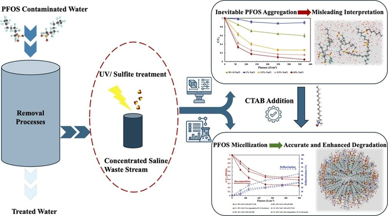
Publication: The Surprising Role of PFOA Dimerization in UV/S Processes
In the paper Decomposition of PFOA in IEX regeneration wastewater: Comparison of UV/sulfur-based processes, key parameters and submicellar aggregates on degradation kinetics, we revealed the significance of PFOA dimerization in UV/sulfite degradation. We showed that PFOA exists as dimers in saline waste streams, and this dimerization affects the degradation kinetics significantly. We also found that excluding dimerization in degradation models overestimates the required fluence for treatment.
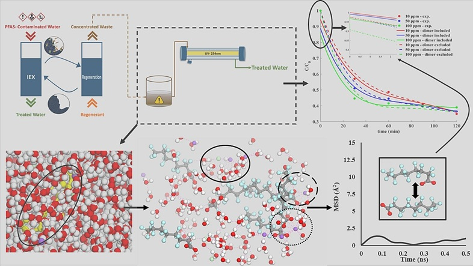
Panelist: EURAXESS North America European Research Day 2023
In November 2023, at University of Ottawa, for EURAXESS North America European Research Day 2023, presented EU based funding opportunities for Canadian and role of Marie Curie Alumni Association (MCAA) - North America Chapter in it.

Award: CIM Vancouver branch's Student-Industry Night Award
Awarded in 2023 by The Canadian Institute of Mining, Metallurgy and Petroleum (CIM) on the recommendation of the CIM Vancouver branch, with a total amount of 2,500.00 CAD.
Award: Carl and Elsie Halterman Scholarship
Awarded a total of 1,675.00 CAD in 2023 by The University of British Columbia on the recommendation of the Faculty of Applied Science, in consultation with the Faculty of Graduate and Postdoctoral Studies, in recognition of academic excellence.
Award: Kashmir Singh Manhas Scholarship in Applied Science
Awarded a total of 2,700 CAD in 2023 by The University of British Columbia on the recommendation of the Faculty of Applied Science, in consultation with the Faculty of Graduate and Postdoctoral Studies, in recognition of academic excellence.
Draft: Raman Spectroscopy for Mineral Detection and Sorting
A critical aspect of mineral processing is selecting the appropriate technique to extract minerals from mined ore, which heavily relies on accurate species identification. This task can be challenging even for experienced professionals—minerals like chalcopyrite, pyrite, and gold can be easily mistaken for each other due to their similar visual appearances (e.g., yellowish color with metallic luster). Such misidentifications can lead to incorrect processing choices, such as using flotation to extract non-existent species, resulting in substantial financial, material, and time losses. This issue is exacerbated with low-grade ore samples, which are increasingly common due to continuous mineral exploration and the declining grades and availability of mineral resources.
The aim is to develop digital twins—high-fidelity computational models that replicate physical materials and processes. These models can be deployed at mining sites for the smart identification of mineral species and the selection of appropriate extraction processes. This work aims to facilitate mineral identification at mine operations through the development of digital twins and advanced machine learning models, ensuring efficient and accurate resource extraction with minimal waste.
Electromagnetic spectra and Raman spectra (fingerprints) will be used to identify species in mined ore samples. Currently, two comprehensive sets of spectral fingerprints exist:
- Elemental spectra: Hosted at NIST's Standard Reference Database -- Atomic Spectra Database (ASD); these spectra are unique for all known elements.
- Mineral spectra: Available from the U.S. Geological Survey Data Series and NASA's Jet Propulsion Laboratory, although discrepancies exist depending on factors such as mine location and purity/contamination.
Investigating Discrepancies
- We will examine the fundamental building blocks of minerals —atoms— and their unique spectral fingerprints. By correlating the elemental spectra from ASD with mineral spectra, we aim to understand and account for discrepancies.
- Using an Extended Iterative Optimization Technique (EIOT), we will extract intrinsic (constant) and non-intrinsic (variable) features from the spectra. Principal Component Analysis (PCA) will identify the most relevant components while maintaining a high data correlation.
Developing Transferable Machine Learning Models
Current mineral identification methods using hyperspectral sensors rely on supervised machine learning, which requires labeled data. This is limited by (1) the need to retrain models for each mine location, and (2) the inability to handle previously unseen mineral species.
- We propose developing unsupervised, physically informed machine learning models that adapt to new data on-the-fly.
Building a Design Space for Single Species
- We will compile data on minerals of concern at Canadian mine sites, including their phase structures, transitions, and electromagnetic spectra.
- When data is lacking, we will use Density Functional Theory (DFT) and Molecular Dynamics (MD) to compute spectra.
- This dataset will train a Convolutional Neural Network (CNN), which will be validated using a separate test dataset.
Creating Realistic Design Spaces
While a CNN trained on pure species data can identify individual minerals, it may struggle with mixtures. To address this:
- Mixture models of the collected species will be developed,
- Random configurations will be generated and their spectra computed using Machine Learning Interatomic Potentials (MLIP) in MD.
- A CNN trained on these mixture datasets will be tested with experimentally collected hyperspectral images.
Enabling Deployment
We will explore the development of a low-cost, fast, cloud-based self-learning model for mineral detection called otfMLesf (on-the-fly Machine Learning models for electromagnetic spectrum fingerprints).
- The model will use the CNN from Milestone 3 to detect single species in real-time,
- For mixtures involving detected species, it will recall the CNN from Milestone 4 to quantify composition,
- For unknown species, it will build random mixture models, compute spectra as in Milestone 4, retrain the CNN, and proceed to quantification.
Supporting Information
- Automatic materials characterization from infrared spectra using convolutional neural networks
- Leveraging infrared spectroscopy for automated structure elucidation
- On the interplay of the potential energy and dipole moment surfaces in controlling the infrared activity of liquid water
- the infrared (IR) spectrum of a generic molecular system can be obtained, within the electric dipole approximation and linear response theory, from the Fourier transform of the quantum time autocorrelation function of the system’s dipole moment
- Raman spectroscopy of minerals and mineral pigments in archaeometry
- Stand-off Raman spectroscopic detection of minerals on planetary surfaces
- RRUFF - Comprehensive Database of Mineral Data (old website)
- Mindat.org is the world's largest open database of minerals, rocks, meteorites and the localities they come from
- Raman spectroscopy for mineral identification and quantification for in situ planetary surface analysis: A point count
Presentation: Writing a Successful Marie Skłodowska-Curie Action (MSCA) Fellowship Proposal
In July 2022, at The University of British Columbia, presented Writing a Successful Marie Skłodowska-Curie Action (MSCA) Fellowship Proposal.
Publication: Raman Spectroscopy based Controller for Cocrystallization
In the paper A molecularly enhanced proof of concept for targeting cocrystals at molecular scale in continuous pharmaceuticals cocrystallization, we demonstrated that Raman spectroscopy enables molecular scale targeting of cocrystals in continuous pharmaceutical cocrystallization by analyzing the vibrational modes of the molecules to identify the formation of cocrystals.

Draft: Computationally Probing Cavitation due to Evaporation at Air-Water Interface in Nanoconfinements
Summary
The evaporation at air-water interface in nanoconfinements can induce a suction force within the liquid that is experienced in form of negative capillary pressure, leading to cavitation under certain conditions. Our current understanding of water thermodynamics suggests this observation should be associated with nanoconfinement (size and surface properties) and water composition (contaminations and entrapped bubbles). The effect of nanoconfinement surface homo/heterogeneity, roughness, uniformity, and size on the cavitation of water is thoroughly evaluated and discussed, followed by recommendations on properly probing this process via computational tools. This letter offers new insight on the cavitation within nanoconfinements of about several nanometers, where negative pressures emerge that stem from properties of nanoconfinement and water, and their interplay on phase behavior.
Problem definition
Cavitation, by definition, involves bubble formation within a liquid. Bubble formation in a liquid, usually, can be induced by (1) changing temperature at a relatively constant pressure or (2) changing pressure at relatively constant temperature. The first is referred as boiling and the latter is vaporization and/or cavitation as illustrated in Fig. 1 (left). In both cases, the bubble formation requires a phase transition (liquid → gas/vapor), and therefore knowledge of equilibrium and coexistence boundaries or vapor pressure profile. Liquids establish different vapor pressures depending on their compositions and this in turn affects such a transition under system temperature and/or pressure.
Information about liquid → gas/vapor phase transition can be synthesized using a pressure – temperature phase diagram (in short: P – T diagram) which explains phase coexistence and transition boundaries. A P – T diagram (Fig. 1 (left)), however, does not offer any important information on the path that such transitions would follow, which has its roots in the use of Gibbs free energy. For instance, one can realize that vaporization at constant temperature can occur with a pressure dropdown but cannot conclude how vaporization at a phase transition would progress or why it sometimes is observed and sometimes not.
To synthesize an understanding of how vaporization progresses, one would need to study the pressure – volume relationship (in short: P – V diagram). The P – V diagram also shows the volume of each phase (liquid and vapor) once a phase transition occurs as indicated by the intersection of the isotherm and vapor pressure curve (Fig. 1 (right)). In thermodynamics, vaporization is a phase transition that involves performing work on the environment in form of volume change. Therefore, the environment (such as the container confining it) also plays a role on vaporization progress or the path it may follow. Helmholtz free energy is capable of tracking and explaining this phase transition while Gibbs free energy does not allow it.
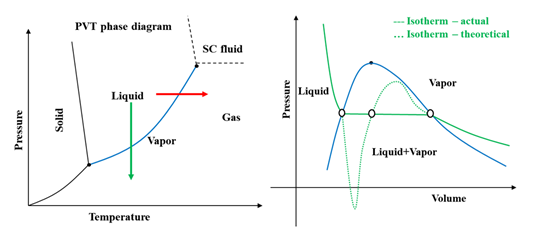
Fig. 1. The schematic phase diagram for liquids/water. Left: the phase boundaries and coexistence for solid, liquid and vapor sates of water in form of P – T diagram, blue solid line shows the liquid–vapor boundary (vapor pressure profile), red arrow shows the boiling process of liquid transition to vapor, red arrow shows vaporization liquid transition to gas. Right: the vaporization liquid transition to vapor in from of P – V diagram, blue line is liquid–vapor boundary (vapor pressure profile), green solid line is actual isotherm, green dashed line is theoretically expected isotherm, ovals show where the two types of isotherms meet each other.
The P – V diagram is given in more details in Fig. 2 to gain an understanding of vaporization path and progress and interplay of the surrounding’s constraints on it, especially the container that confining the liquid. If one connects the critical point of liquid–vapor boundary (binodal) to the critical points of theoretical isotherm, the curve that yields is called the spinodal boundary, which reflects on the thermodynamic stability of liquid and vapor phases in system. A phase is unstable if it is enveloped within the spinodal boundary and therefore will always tend towards a phase transition to stabilize the system.
The system, wherever it is in between the two binodal and spinodal boundaries, is metastable and will not experience a phase transition unless appropriate thermodynamic or kinetic triggers exist, such as nucleation sites of sufficient size, perturbation of the container, or sudden changes of system container constraints like pressure or volume changes. The phase transition from liquid to vapor follows the actual isotherm (solid green line) if nucleation sites of sufficient size exist within the liquid. These nucleation sites, for example, can be the entrapped bubbles within the liquid itself, which for the case of water practically always exists. Other source of such nucleation sites is contaminations and impurities like ions and/or minerals. Also, the container surface roughness and properties can act as nucleation sites at irregular contact zones.
If enough sufficient nucleation sites do not exist or nucleation growth is slow or delayed, then the liquid tends to follow the theoretical isotherm allowing itself to withstand more pressure dropdown than usual. This allows the liquid to enter a metastable equilibrium state to tolerate the lower pressures, even negative, while there is no chance of bubble formations (delayed or avoided), which is shown in red in Fig. 2. However, there is a lower negative pressure limit where the phase change from liquid to vapor (cavitation) will occur eventually by the spontaneous breaking of cohesion between water molecules, even in an absolutely pure liquid (marked by the black bullets on theoretical isotherm at negative side of pressure axis in Fig. 2). This is known as homogeneous cavitation and corresponds to the most negative pressure a liquid can ever sustain.
For example, pure water can sustain a negative pressure of about -30 MPa at normal temperatures (between 5 and 35 °C). In practice, however, one cannot expect liquid water to be pure, impurity-free, contamination-free, with no entrapped bubble. This triggers formation of bubbles well before the liquid would reach the lower negative pressure limit, and consequently cavitation may occur. This type of cavitation is known as heterogeneous cavitation. This concludes that the actual cavitation limit sits well above the theoretical limit, and it has been confirmed by many experiments, where liquid water would sustain pressures down to -25MPa. It is important to note that the corresponding vapor phase is within the spinodal boundary and therefore unstable, so if liquid → gas/vapor phase transition occurs, the bubbles must nucleate and grow.
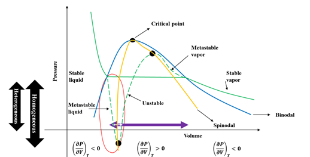
Fig. 2. A closer look at schematic P – V diagram, blue line is liquid–vapor boundary (vapor pressure profile), green solid line is actual isotherm, yellow solid line shows the spinodal boundary, green dashed line is theoretically expected isotherm, ovals show where the two type of isotherm meet each other, red oval shows the conditions reflecting confined liquid, cyan double arrow shows the volume change due to vaporization under normal conditions (no confinement) and white double arrow shows the volume change due to vaporization attainable (allowed) within a confinement.
For water, the ratio of density of vapor (0.804g/liter) to that of liquid (997g/liter) is in orders of magnitudes of about 10^4. In other words, the same amount (mass) of water requires and occupies a volume of 10^4 times that of its liquid state (assuming gas incompressible to emphasize the magnitude of changes). This means that even if the thermodynamic dictates a liquid → gas/vapor phase transition, it may be suppressed/delayed due to the environmental constraints like the size/volume of container confining the system. For example, a nanoconfinement cannot accommodate such a large volume change, therefore it will push the liquid to follow the theoretical isotherm entering the metastable state rather than immediately following the actual isotherm forming bubbles.
This metastable state of water in a nanoconfinement (shown in red in Fig. 2) has been the subject of many studies to understand the occurrence of cavitation, especially where continuous water evaporation at the air–water interface occurs. A capillary pressure because of continuous water evaporation at the air–water interface exists that exerts a negative pressure within the liquid, leading to cavitation under certain conditions, associated with nanoconfinement (size and surface properties) and water composition (contaminations and entrapped bubbles).
Interplay of confinement characteristics
A simple way to look at the surfaces is to assume an ideal surface similar to uniformly flat plane with the same texture and interaction tendency throughout its whole surficial area as shown in Fig. 3. However, such a surface does not exist, and for real surfaces neither their texture is flat/smooth, nor the curvature/form remains identical everywhere. Surfaces, because of possible functional groups and/or spatial orientation of atoms, may show different affinities toward the liquid. A surface can be hydrophobic (low surface–liquid affinity) or hydrophilic (high surface–liquid affinity) depending on their tendency to attract or repel water, respectively. If the affinity of the surface towards the liquid (chemical heterogeneities) or its texture (physical heterogeneities) remains the same everywhere on the surface, such a surface is referred to as homogeneous surface, otherwise it is referred to as heterogeneous surface. A heterogenous surface is the most realistic way of looking at surfaces.
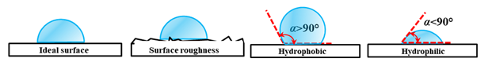
Fig. 3. Schematic representation of surface properties, α is the contact angle. An (unphysical) ideal surface is shown on the left with no surface roughness. The hydrophilic surface defined as when contact angle is smaller than 90° and hydrophobic when contact angle is larger than 90°.
The metastability of liquid confined within a heterogenous surface nanoconfinement can strongly be affected by the ratio of the highest surface–liquid affinity (hydrophilicity) to that of lowest (hydrophobicity) (Fig. 4). These chemical heterogeneities can influence the position and shape of initial bubbles, where nucleation will occur around the less hydrophilic regions. Furthermore, the affinity of the surface towards the liquid may cause layering of the liquid within a nanoconfinement. For example, a surface fully made of carbon (hydrophobic) would repel water molecules while a surface containing nitrogen (hydrophilic) attracts water molecules. In a hydrophilic nanoconfinement, several layers are identified near the surface for monoatomic and polymeric fluids while the density profile at the center of the nanoconfinement remains smooth. In the case of water, the first water layer adjacent to the surface in the nanoconfinement is locked where each oxygen–surface bond is followed with a hydrogen–surface bond (known as flat ice).
The affinity of the surface determines the thickness of this first layer. The remaining water molecules interact with this first layer and experience oscillations in velocity. The higher the affinity of the surface, the higher are the velocity oscillations. Such velocity oscillations can drastically increase if the size of the nanoconfinement is reduced to 15 σ, where σ is the distance where the attractive and the repulsive forces of the surface equilibrate. These drastic velocity oscillations may expose water to high shear stresses and, if strong enough, can initiate bubble formation by breaking the cohesion between the water molecules. In fact, the more hydrophilic the surface, the greater is the energy barrier for bubble formation and nucleation. In contrast, in a hydrophobic nanoconfinement, bubble formation is almost inevitable. This is because a hydrophobic surface significantly reduces, or even eliminates, the energy required for bubble formation and nucleation.
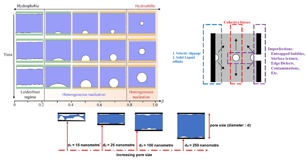
Fig. 4. Top-left: the effect of hydrophilicity (0≤β≤1) on the cavitation, the growth rate and regime of bubbles suggesting that the more hydrophilic a surface (β→0) the less probability of forming bubbles. A hydrophilic surface prohibits bubble formation until velocity fluctuations due to water–surface interactions become drastically large, where bubbles may form near the surface but merely transfer into the bulk. Top-right: the three main mechanisms sought for formation of bubbles near a surface. The surface roughness creates small but sharp variations in interatomic potential deriving water–surface interactions and ultimately velocity fluctuations that may lead to bubble formation. A sudden drop of pressure at the interface of cavity and the air could create a uplifting force (toward the interface) that negatively affects the cohesion of water molecules and might lead to bubble formation. Bottom: the effect of nanoconfinement size and dimension on the probability of bubble formation near a hydrophilic surface where bubble formation is inevitable when velocity oscillations drastically increased due to nanoconfinement size (≤15 σ).
In addition to the surface chemical heterogeneities in nanoconfinements, physical heterogeneities – which are comprised of change in the texture of the surface or the presence of contractions/expansions within the nanoconfinement – can also initiate bubble formation and nucleation. Although it is very hard, nonetheless unphysical, to differentiate heterogeneities at nanoscale and atomic level, as chemical or physical. The nanoconfinement surface roughness can be defined as the ratio of minimum hydraulic radius to maximum hydraulic radius, and when roughness is larger than 6%, hydrophilic nanoconfinements may cause cavitation by increasing the possibility of bubble entrapment at physical heterogeneities as such irregularities resulting in different local liquid pressures.
For irregularities in the form of corners, cavitation can occur due to the corner flow of liquid, especially when the equivalent radius of nanoconfinement is smaller than 115 nanometers. For irregularities in the form of expansion/contraction, bubble entrapment at the air–water interface at the nanoconfinement entrance can occur which then can move deep into the nanoconfinement in the direction of the contraction. It is worth to note that due to evaporation, a temperature difference alongside the nanochannel is formed from entrance being cooler than the center/middle of nanochannel. As surface tension varies with temperature, the pressure profile within nanochannel should vary too. Then, it might be expected that the interface at the entrance is much more stable than the one at the bubble boundary (higher temperature). However, this temperature difference is not big enough to establish a lower liquid pressure at the entrance.
Interplay of water characteristics
The purity of liquid, like presence of contaminations and entrapped bubbles, also play an important role in generating cavitation, such that, in certain circumstances, even a single dilute hydrophobic contamination can dry out the nanoconfinement completely.
Add stuff to here
Probing cavitation computationally
To probe cavitation computationally, the continuum and mesoscale approaches that rely on the Navier-Stokes theory cannot be considered since they fail when the geometry/size of system is less than 5.1 times the molecular diameter of liquid. Among atomistic and molecular approaches, the molecular modeling is favored since it significantly saves time and resources to perfume computations.
In molecular dynamics, the criteria to select a water model depends on the concerned physical phenomena, and for study of cavitation, that is how well the model replicates the air–water interfacial properties, most importantly the surface tension. The literature review concludes that four-site transferable interaction potential (TIP4P/2005), with capability to reproduce long-range dipole-dipole interactions, is a reliable water model for purpose of investigating cavitation. The TIP4P/2005, also, provides satisfying agreement with the experimental pressure, volume, temperature (PVT) measurements.
To reflect hydrophobicity/hydrophilicity of surfaces, there are mainly two approaches to build a surface in simulations: (1) with atomistic resolution and explicit inclusion of atoms / particles, or (2) implicitly, meaning that the surface is represented as a boundary condition with effective interactions. The implicit approach significantly reduces the computational cost of the simulation, while explicit approach offers more detailed view of events occurring associated with cavitation particularly due to chemical heterogenicity of surface.
In the implicit approach, one way to systemically generate a surface with different hydrophilic and hydrophobic affinities is introduced in literature that involves modifying the Leonard-Jones potential with a parameter, c, to tune the surface-liquid affinity, given as V(rij) = 4ε((σ/rij)12 - c(σ/rij)6). Here V is the potential applied to a particle/atom at a distance rij from the surface, ε is the strength of potential, σ is the depth of potential, and c is the parameter to tune the surface-liquid affinity. The more positive the c value, the more hydrophilic is the surface, and the more negative the c value, the more hydrophobic is the surface. This modification also offers the opportunity to practically calibrate the value of c, by comparing surface angle measurements to that of computationally calculated ones.
To choose an ensemble, while statistically and theoretically all the ensembles would practically converge to similar final states, a good choice is using the microcanonical ensemble (NVE: constant number N, volume V, and energy E). Microcanonical ensemble corresponds to the Helmholtz free energy and finds minimized system entropy, which is more informative as discussed in introduction. The NVE ensemble essentially assumes the system is isolated with no energy exchange with the environment, so that the energy is conserved. For probing cavitation, the embedded isolated system assumption in NVE ensemble is a valid assumption and implementation because possible local thermal and pressure variations due to bubble formation are not that significant to results in an energy exchange with environment over system boundaries but only could create plausible local thermocapillary movements. Furthermore, the timescale (duration) of such variations is at range of nanoseconds which is well below the threshold of thermal response in majority of materials forming nanoconfinements.
To ascertain the initial condition of simulated system matches the actual initial physical system of interest, isobaric−isothermal ensemble (NPT: constant number N, pressure P, and temperature T) can be used to relax initial configuration.
In order to initiate cavitation, a number of approaches can be found in literature, including (1) deleting random atoms / particles from the system from within the body of liquid or at the interface / boundary, (2) stretching system boundary, (3) applying a pulling force to atoms / particles at boundary and (4) manipulating the velocity of atoms / particles approaching boundary in a specific direction.
Deleting random atoms is physically inconsistent with the nature of cavitation since it creates fake nucleation sites and confuses results for the cause. Also, this approach causes improper description of the out-of-equilibrium and the mass transport phenomena. Stretching the boundary practically mimics a shear-induced cavitation where the cavitations found to occur at the liquid-surface interface, that is due to interaction of moving surface (boundary). It is obvious and critical to note that stretching is not mimicking pressure-drop driven cavitation. The extensive use of stretching in literature stem from such neglection when comparing these obtained simulation results with agreeing experimental observation, where often cavitation is seen on the surfaces.
Applying a force at boundary, while seems to be a sound approach, has its own challenges. In liquid, the pulling force is not uniformly felt by liquid molecules because of the weak cohesive forces between liquid molecules. So, the strength of pulling force, F(δ), gets weaker as deeper (δ, depth) one investigates its footprints within liquid body. At equilibrium conditions, particle dynamics will decay over a distance of a few mean free paths, where the mean free path in a liquid is about 0.13 nm. Water molecule has a diameter of 0.27 nm with an equilibrium distance of about 0.31 nm. This means that to make next adjacent molecules experiencing the force, solely through cohesive interactions, the force must be applied at least to a depth of 0.5 nm. This is because previous studies suggesting the formation of several layers within nanoconfinements – the lowest being near the surface and the highest at the center. This force will be experienced by the next adjacent particles as fast as a shock wave traveling through the liquid. Given the speed of sound in water is 343 m/s (343 nm/ns), one would note that 0.31 nm takes 0.9 picoseconds. This concludes that to have statistically sound data to analysis, very long simulations would be needed.
It appears that manipulating velocity is a much softer approach than applying a force (changing acceleration) in terms of changing atom/particle coordinates.
Computational details
We employ Molecular Dynamics simulations to probe cavitation and pressure dropdown due to the entrapped bubbles within both hydrophilic and hydrophobic nanoconfinements. The main reason to use Molecular Dynamics is that the continuum and mesoscale approaches which rely on the Navier-Stokes theory fail when the geometry of system is less than 5.1 times the molecular diameter of liquid.
To reliability model water molecule and its interactions, we use the four-site transferable interaction potential (TIP4P/2005), capable of reproducing long-range dipole-dipole interactions. The TIP4P/2005 provides satisfying agreement with the experimental pressure, volume, temperature (PVT) measurements and computational studies.
In order to systemically generate surfaces with different hydrophilic and hydrophobic affinities, we employ a modified version of the Leonard-Jones potential given as V(rij) = 4ε((σ/rij)12 - c(σ/rij)6), where V is the potential applied to a particle/atom at a distance rij from the surface, ε is the strength of potential, σ is the depth of potential, and c is the parameter to tune the surface – liquid affinity. The more positive the c value, the more hydrophilic is the surface, and the more negative the c value, the more hydrophobic is the surface. This modification also offers the opportunity to practically calibrate the value of c, by comparing surface angle measurements to that of computationally calculated ones.
We use SHAKE algorithm to retain the molecular structure of water, with accuracy tolerance = 10-4 (1 part in 10,000) and a maximum of 20 iterations, 1 bond type and 1 angle type (as given by TIP4P/2005 model). The long-range Coulombic interactions are computed in pppm (particle-particle particle-mesh) / TIP4P K-space where relative error in forces is 10-4. The seed number is 880713 for reproducibility. We consider a squared nanoconfinement as shown in Fig. 5. We induce the stretching and pressure dropdown within liquid body via moving system boundary (expanding) from its rightmost side.
In order to bring the system to its equilibrium state, we perform dynamics under microcanonical ensemble (NVE: constant number N, volume V, and energy E) for 1 ns. In order to retain the system at temperature of interest, T = 300 K, we employ a Berendsen thermostat applied at every 0.1 picoseconds and the Stoermer–Verlet time integration algorithm to calculate positions and velocities at every timestep (dt = 1 femtosecond). It worth to note that the microcanonical ensemble essentially assumes the system is isolated and no energy exchange with the environment may occur, so that the energy is conserved. This (isolated system) is a valid assumption and implementation for current study because possible local thermal and pressure variations due to bubble formation are not that significant to results in an energy exchange with environment over system boundaries but only could create plausible local thermocapillary movements. Furthermore, the timescale (duration) of such variations is at range of nanoseconds which is well below the threshold of thermal response in majority of materials forming nanoconfinements (thermal conductivity values in W / mK: cellulose = 0.040, silica = 1.31, soil = 0.2).
We perform two separate set of computational experiments following equilibrating the system.
Experiment A1 – entrapped bubble in absent of pressure dropdown:
We insert a single bubble of radius R = 1, 2, 3, 5 Å centred at different locations x = α × L/2, y = β × W/2, z = γ × H/2, where L, W and H are the length, width, and heights of nanoconfinement, respectively as shown in Fig. 5. Parameters α, β, and γ, all can vary as +/- 0.25, +/-0.50, +/-0.75, and +/- 1. We perform dynamics under microcanonical ensemble (NVE) for 1ns as mentioned before.
Experiment A2 – entrapped bubble in presence of pressure dropdown:
We induce a pressure dropdown by expanding the system boundary on the rightmost side as shown in Fig. 5 (middle). We perform the expansion every 0.1 nanoseconds, where each time the system is expanded l Angstroms (Å), concluding an expansion rate of l m/s. We examine l = 0.01, 0.1, 0.5, 1, 2. We perform dynamics under microcanonical ensemble (NVE) for 1ns as mentioned before.
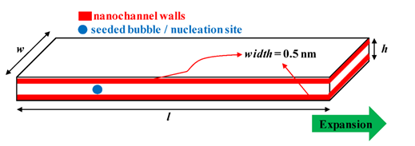
Fig. 5. Schematic of nanoconfinement (top) as well as entrapped bubble experiments. Bottom shows partitioning of nanoconfinement for data postprocessing
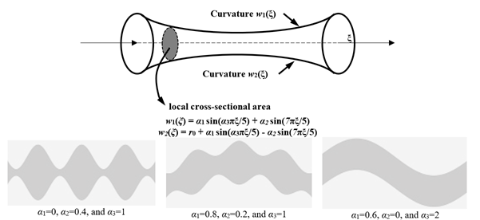
Fig. 6. Schematic of nanoconfinement with irregular geometry (top) having a minimum equivalent radius of r0 and local equivalent radius of r(ξ) =(w2(ξ) - w1(ξ))/2 at any position ξ, and three different examples (bottom)
Data analysis
For data analysis, we use a coarse-grained density field …… We measure the density profile over a number of layers in nanoconfinement heights direction (z axis) and width direction (y axis), particularly because previous studies, suggest the formation of several layers within nanoconfinements – the lowest being near the surface and the highest at the centre. The radial distribution function, (or pair correlation function, g(r)) which reflects the molecular structure in terms of density is very useful, especially as it offers the possibility of comparison to experimental data extracted from X-ray scattering of molecular fluids and neutron diffraction experiments.
We measure the average hydrogen bond lifetime as the time integral of the continuous hydrogen bond correlation function (SHB(t)) given as SHB(t) = ‹h(0) H(t)›/‹h(0) h(0)›, where H(t) = 1 is the initial hydrogen bonds at time t = 0 are remained unchanged until time t = t, otherwise, H(t) = 0. If there is hydrogen bond in a specific pair of water at time t = 0 and t = t, the h(0) = 1, otherwise it's h(0) = 0.
For the sake of data analysis and validation, a wide range of quantities are approached in literature, such as measuring the average hydrogen bond lifetime as the time integral of the continuous hydrogen bond correlation function that is given as SHB(t) = ‹h(0) H(t)›/‹h(0) h(0)›, where H(t) = 1 is the initial hydrogen bonds at time t = 0 are remained unchanged until time t = t, otherwise, H(t) = 0. If there is hydrogen bond in a specific pair of water at time t = 0 and t = t, the h(0) = 1, otherwise it's h(0) = 0. However, it is recommended to consider the radial distribution function, (or pair correlation function, g(r)) for this purpose since it reflects the molecular structure in terms of density, that should be very useful as it offers the possibility of comparison to experimental data extracted from X-ray scattering of molecular fluids and neutron diffraction experiments.
- Dataset availabile from here.
Publication: Machine Learning Interatomic Potentials for Nanohardness Prediction
In the paper Nanohardness from First Principles with Active Learning on Atomic Environments, we develop machine learning interatomic potentials (MLIPs) for nanohardness prediction in various materials using density functional theory (DFT) data and active learning.
- Datasets available from here
The ability of materials to resist against deformation, to which might be exposed through a wide variety of acting forces including indentation, scratching, bending, abrasion, cutting or penetration and etc., is referred as hardness (H). Such definition suffers from the locality issues i.e. hardness would depend on the design of measurements, exposed deformation acting force type and orientation/direction, aspect ratio of workmaterial and acting force piece (indenter). This in turn recalls the need for a fundamental hardness definition which is far to reach as the property itself is somehow an ad-hoc property comprised of subsequent effects of other interrelated structural properties like yield strength, tensile strength, modulus of elasticity, and etc. Keeping the inspirations from the practical experiments and measurements in mind, apparent hardness can be realized as the mean contact pressure measured when the area of contact is at full load.
The apparent hardness has been studied over three different size scales i.e. (i) macro, (ii) micro and (iii) nano. For instance, to rapidly retrieve mechanical properties in a bulk material with limited availability (small samples), the measurement of macro scale hardness can be considered. However, macro scale measurements are highly variable especially when the material might pose multi-phase or multi-crystalline structure with various grain sizes and orientations; reducing the reproducibility of results and violating the reliability and validation of findings. Indeed, considering the aspect ratio of acting indenter and the material as well as the magnitude of load (force) exerted on the material, the penetration depth into the material is too large that alters structural and mechanical properties itself upon acting. For such cases, then, the micro scale measurements need to be sought for, in where frequently loads up to 1kg are exerted onto the material surface while recording changes in applied load and penetration depth over time. The microstructure and different grains in the material can be captured in such measurements and as the depth/extend to which the indenter acts is too small, issues with macro scale measurements would not be encountered. Enhanced accuracy in the design and operation of spectroscopy devices brings the opportunity to measure and analysis the hardness more precisely in nano scales where loads of about 1 nano Newton are exerted onto the material while displacements as small as 1 nanometer per second can be operated which makes achievable the determination of maximum force tolerable by material.
Despite the availability of high precision experimental devices, these measurements can be affected by operating/environmental parameters such as humidity which creates meniscus forces that, in the case of improper measurements and set-up management, makes findings unreliable. Indeed, the cost of material preparation and the time required to carry out measurements are drawbacks associated to hardness measurements. Thus, noting to the progress in computational methods and facilities, the theoretical investigations and simulation of material hardness in last decades have found much attention including (i) atomistic level modeling such as molecular dynamics, (ii) numerical continuum modeling such as finite element modeling and constituent equations, and (iii) coupled/combination of the atomistic and continuum models where key properties of material like younge modulus are initially predicted by molecular modeling techniques and then fed into continuum models. By current molecular modeling approaches, capturing hardness measurement process in full is not easy to achieve as it’s impossible to perform simulations utilizing real displacement steps used in spectroscopy practices i.e. 1 nm/s and this is one of the main reasons and motivations for development of coupled methods so that a long enough picture of process could be achievable even with lower accuracies. In such case, the effect of other factors including choice of indenter shape and geometry and the orientation of contact, which require repetitive simulations, can be attainable in a reasonable computational time.
However, to simultaneously resolve such computational difficulties and retrieve quantum-mechanical levels of accuracy, the use of machine learning-based interatomic potentials (MLIPs) has found much interest over the last decade. These models correlate interatomic potential surface with atomistic level properties/descriptors so that quantum-mechanical (QM) accuracy will be retained within affordable computational costs. In such case, the reliability and versatility of correlations depend on how well the descriptors (atomic properties) have been chosen to reflect the physicochemical characteristics of material as well as how well-established (complex) functionality has been considered. One of the most recent and efficient machine learning interatomic potentials are developed based on the moment tensor potentials (MTP), by which most of quantum-mechanical models can be approximated by increasing the number of parameters in its basis functions in a systematic manner while keeping computational complexity scaling linearly with the number of atoms.
The MLIPs require an initial fitting (training) into the ab initio data for correlating the coefficients in their basis functions, then they would be ready for utilization in property calculations. In simulations, it’s possible to encounter situation/configurations for which, the MLIPs might give over/underestimations which is an unavoidable characteristic of interpolative fitting/trainings. In order to update MLIPs for such extrapolations, then another fitting/training step is demanded referred as learning. Referring manual training of MLIPs as passive learning, then active learning is the case when MLIPs ask for ab initio data for the obtained extrapolations in the course of simulation from a databank (or an ab initio calculation package) which oracles over the required information to the MLIPs. Thus, active learning enables MLIPs to learn and train themselves on the fly. By treating extrapolations as local environments within an appropriate cutoff from the respective central atom, the retraining can be reduced/restricted to such environments only. Then, the cost of computations associated to the retraining of MLIPs can be reduced which is referred here as learning by neighborhood.
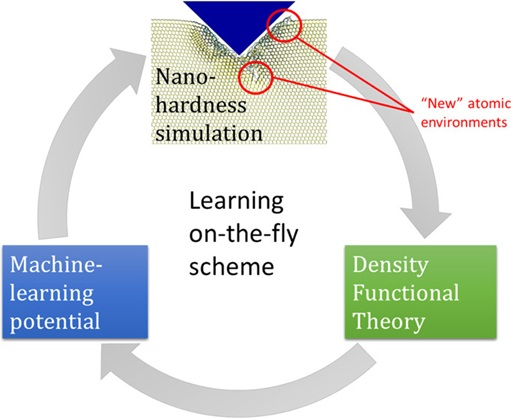
Draft: Physiochemical Population Balance Model (PBM) with Dissipative Particle Dynamics (DPD) in LAMMPS
This is a LAMMPS-based implementation of a Physiochemical Population Balance Model (PBM) using Dissipative Particle Dynamics (DPD) for structural evolution and Transition State Theory (TST) for chemical kinetics.
This simulation setup is for cocrystalization of ibuprofen and nicotinamide. The simulation models the formation and dissociation of chemical clusters (species types 3–23) from two primary monomer species (types 1 and 2). It employs a hybrid approach:
- Mechanical Dynamics: DPD potential accounts for thermal and structural behavior.
- Physiochemical Kinetics: TST-based rate constants determine the probability of species transformation events (Birth and Death).
- Population Balance: Discrete "event" counters are calculated per timestep to modify the particle population in-situ while preserving bead numbers or chemical stoichiometry.
DPD Part
The interaction between any two particles i and j is governed by three pairwise additive forces:
Fij = FijC + FijD + FijR
- Conservative Force:
FCij = Aij w(rij) r̂ij
- Dissipative Force:
FDij = -γ w2(rij) (r̂ij · vij) r̂ij
- Random Force:
FRij = σ w(rij) ζ Δt-1/2 r̂ij
- Weighting Function:
w(rij) = 1 - rij/Rc for rij < Rc
w(rij) = 0 for rij ≥ Rc
Where Aij is the maximum repulsion, γ is the friction coefficient, σ is the noise amplitude (related to γ by σ2 = 2γ kB T), and Rc is the cutoff radius.
Interaction Parameters (aij)
The repulsive parameters aij used for the conservative force are derived from interaction "fingerprints" (Xij) stored in fingerprints_xij.lmp:
aij = V1 + V2 · Xij
In the current implementation, V1 = 1.0 and V2 = 1.0, mapping energy values directly to force units.
TST Part
Chemical reaction rates are calculated using the Arrhenius-like Transition State Theory expression:
k = (kB T / NA h) exp(-Ea / Rg T)
Physical Constants:
- kB: Boltzmann constant (3.2976 x 10-27 kcal/K)
- h: Planck constant (2.51 x 10-38 kcal.s)
- NA: Avogadro constant (6.0221 x 1023 /mol)
- Rg: Gas constant (1.987 x 10-3 kcal/K.mol)
The activation energy barriers (Ea) are defined in fingerprints_barrier_n.lmp for every birth (B) and death (D) event for clusters AA, BB, and AB.
PBM Part
The number of chemical events (n) performed at each iteration is calculated using the following discrete logic:
- Monomer Birth (forming clusters AA or BB):
nbirth = ⌊kB · Nmonomer2 · Δt · step⌋
- Cluster Death (dissociating AA or BB):
ndeath = ⌊kD · Ncluster · Δt · step⌋
- Mixed Birth (forming AB clusters):
nmixed birth = ⌊kB · NA · NB · Δt · step⌋
Constraint Enforcement: nmixed birth ≤ 2 · min(NA, NB) to prevent local population exhaustion.
- Mixed Death (dissociating AB clusters):
nmixed death = ⌊kD · NAB · Δt · step⌋
Species Classification
| Type | Label | Description | Mass (g/mol) | Diameter (Å) |
|---|---|---|---|---|
| 1 | A | Primary Monomer A | 122.127 | 5.9775 |
| 2 | B | Primary Monomer B | 206.285 | 7.5271 |
| 3–11 | AA1–AA9 | A-A Homoclusters | 244.254 | ~7.5 |
| 12–20 | AB1–AB9 | A-B Heteroclusters | 328.412 | ~8.6 |
| 21–23 | BB1–BB3 | B-B Homoclusters | 412.570 | ~9.5 |
Execution Flow
- Setup: Initializes 23 atom types and constants.
- Equilibration: Runs NPT dynamics (Nose-Hoover barostat/thermostat) followed by NVE.
- PBM-DYNAMICS Loop:
-- Updateskrates based on currentT.
-- Measures species populations (Ni).
-- Calculates nbirth and ndeath for all 21 reactions.
-- Executes reactions viacreate_atoms(Birth) anddelete_atoms(Death).
-- Updates DPD interaction parameters based on new populations.
-- Runs NDYN steps of mechanical dynamics.
Usage Instructions
lmp -in Main.lmp
- LAMMPS: Must be compiled with
DPDandASPHEREpackages. - Units: The script uses
realunits (mass in g/mol, distance in Angstroms, time in femtoseconds, energy in kcal/mol). Main.lmp: Main control script.fingerprints_xij.lmp: Matrix of interaction fingerprints.fingerprints_barrier_n.lmp: Kinetic barriers for all species.setup_constant.lmp: Defines physical constants (kB, h, NA, Rg).dynamics_compute_events.lmp: Implementation of the PBM transformation logic.
- Access scripts from here.
Publication: Molecular Level Analysis of Cocrystal Formation
In the paper Molecular engineering of cocrystallization process in holt melt extrusion based on kinetics of elementary molecular processes, we found that operating at low temperatures (especially lower or very close to the melting temperature of ibuprofen) for longer residency times creates a safe route for maximizing the presence of ibuprofen and nicotinamide co-crystals.

Publication: Incomplete Cocrystallization of Ibuprofen and Nicotinamide
In the paper Incomplete cocrystalization of ibuprofen and nicotinamide and its interplay with formation of ibuprofen dimer and/or nicotinamide dimer: A thermodynamic analysis based on DFT data, we addressed the molecular thermodynamics of mixtures of ibuprofen and nicotinamide, with special focus on the possibility of formation of dimers of ibuprofen–ibuprofen or dimers nicotinamide– nicotinamide and their corresponding interplay with mixture phase behaviour.
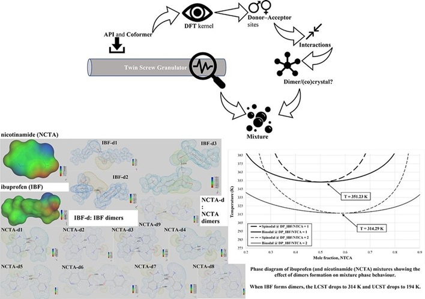
Publication: TEMPO-Oxidation of Native Cellulose Molecules
In the paper A molecular scale analysis of TEMPO-oxidation of native cellulose molecules, we addressed that TEMPO-oxidized cellulose accommodates a threefold screw conformation where the negatively charged (–COO⁻) functional groups are pointed away from the surface in all spatial directions.
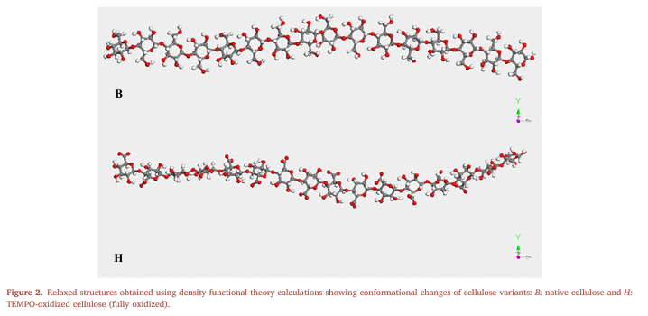
Publication: Variable Density Mass Transfer Correction
In the paper A note on the composition-dependency of the density within the mass transfer layer, we derived the equation for the mass transfer correction factor Rn, which accounts for the effect of varying density (ρ) in a binary mixture. The model is particularly relevant for high-flux gas absorption or evaporation where the standard constant-density assumptions fail.
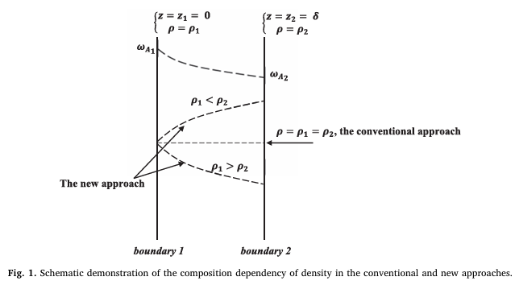
Publication: Direct-Air CO₂ Capture in Biomass
In the paper Physical adsorption of CO₂ in biomass at atmospheric pressure and ambient temperature, we showed that CO₂ adsorption is controlled by a CO₂–water–biomass network involving the sharing of common water molecules, leading to 5–56 g of CO₂ adsorption per gram of biomass at 230–310 K and atmospheric pressure.
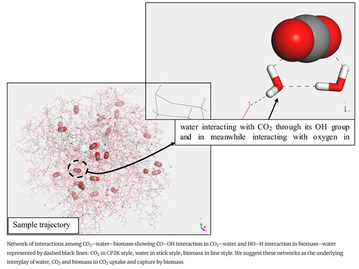
Publication: Falling Film Mass Transfer & Penetration Theory
In the paper Revisiting ‘penetration depth’ in falling film mass transfer, we calculated mass transfer characteristics in falling liquid films. We compared the Infinite Penetration (Higbie's theory) and Finite Penetration models to determine how deep a solute penetrates a moving film under various physical conditions.
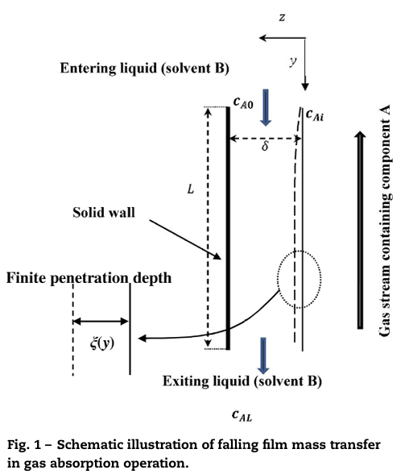
Award: Marie Skłodowska-Curie Postdoctoral Fellowship
Selected as a Marie Skłodowska-Curie Postdoctoral Fellow at University of Limerick under the EU Horizon 2020 Research and Innovation Program, with a total funding of 75,424.00 Euros.
- Selected based on (1) having a MSc degree + (2) at least 4 years of research experience.
Presentation: Nanohardness from First Principles with Active Learning on Atomic Environments
In November 2018, presented "Nanohardness from First Principles with Active Learning on Atomic Environments" at Max-Planck-Institut für Eisenforschung, Düsseldorf, Germany.
- MLIP is an open-source package for developing and using machine learning interatomic potentials based on the Moment Tensor Potentials (MTP).
Publication: Thermokinetic Model of Phase Inversion
In the paper On the search of rigorous thermo-kinetic model for wet phase inversion technique, we developed a rigorous thermo-kinetic model for the wet phase inversion process, with special emphasis on the role of the diffusion-thermo effect at the interface.
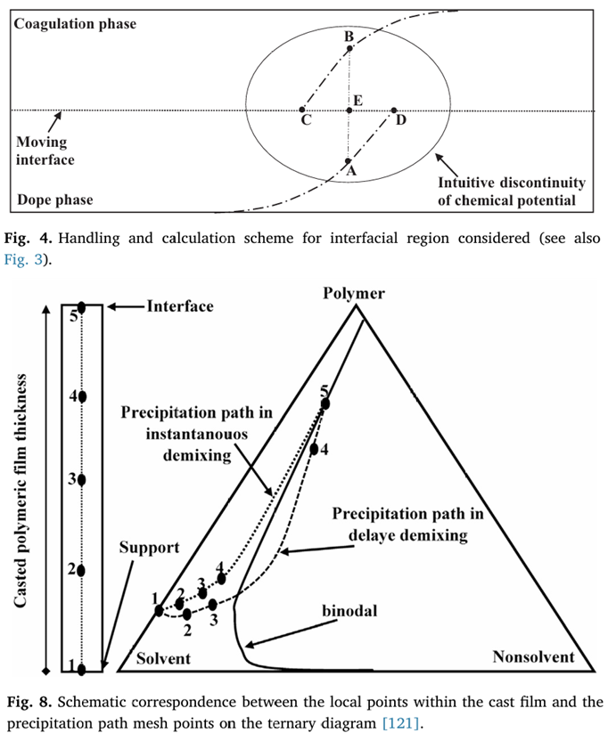
Scripts
- Access scripts from here.
Award: Research Project Replacement to National Service
Iran’s National Elites Foundation support program for research-based National Service.
Publication: Modeling Drying of a Coated Paper
In the paper Modeling Drying of a Coated Paper, we simulated the drying of a coated paper, coupling energy and mass balances to solve the differential equations, under various drying conditions i.e., only hot air drying, only radiant drying, and mixed hot air-radiant drying, cosindering the effect of one side and two side assumption on evaporation, effect of venting air speed and radiant heat source presence and its distance from the drying surface on the drying of a coated paper.